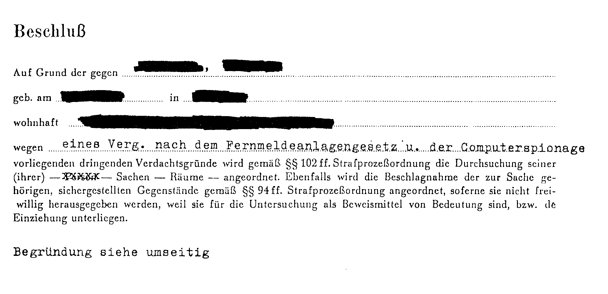
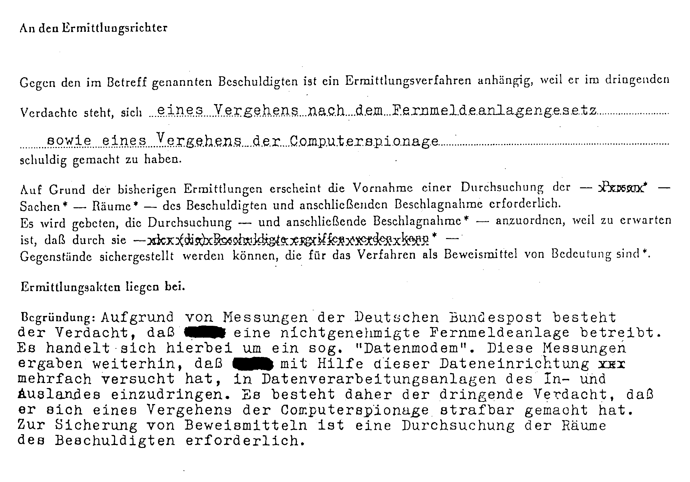

Jagd auf Mailboxen
Die Zeiten unbeschwerten »Hackens« sind vorbei: Immer häufiger steht bei ahnungslosen Mailbox-Betreibern oder DFÜ-Fans die Polizei vor der Tür. Angezeigt von der Kripo, der Post oder dem Jugendamt. Die Beschuldigten sind sich in vielen Fällen aber nicht einmal der Gründe bewußt. Wodurch macht man sich strafbar?
Plötzlich hatte ich ein Ermittlungsverfahren am Hals«, so M.R. (Betreiber der ehemaligen »Chat-Box« in München). Eines Tages stand bei ihm die Kriminalpolizei mit einem Hausdurchsuchungsbefehl vor der Tür. Grund: Betrieb einer nicht genehmigten Fernmeldeanlage (Modem). Resultat: Anzeige wegen Verstoßes gegen das Fernmeldeanlagen-Gesetz und wegen des Vergehens der Computerspionage. Seine gesamte Software zum Betrieb der Mailbox und sein illegal betriebenes Modem wurden auf der Stelle beschlagnahmt.


Kleine Gesetzeskunde: M.R. fiel mit dem Verdacht auf Computerspionage unter Tatbestand des §202a des StGB.
Doch wie kam man auf den Verdacht der Computerspionage? M.R. »hackte« öfters im Datex-P-Netz mit einer eigenen NUI. Im März 1986 wunderte er sich über eine zu hohe Abrechnung seiner NUI-Gebühren und verlangte von der Post eine Aufschlüsselung der Kosten. Diese prüfte daraufhin alle NUAs, die er im März angewählt hatte. Darunter waren auch einige nichtöffentliche Datenbanken. Die Post folgerte daraus, daß er sich zu diesen Datenbanken unberechtigten Zutritt verschafft hatte. Daher der Verdacht der Computerspionage. Ob man ihm dies allerdings nachweisen kann, stand zum Redaktionsschluß noch nicht fest.
Ein anderes Beispiel ist I.K.: Er hatte eine Anzeige wegen Verherrlichung von Gewalt in seiner Mailbox erhalten. Was war geschehen? Ein Benutzer schrieb einen »Filmtip« für einen indizierten Video-Film in den Menüpunkt »öffentliche Mail« der Box und das reichte für eine Anzeige vom Jugendamt.
Wir befragten zu diesen Fällen den Leiter der Dienststelle »Computerkriminalität« Werner Paul im Bayerischen Landeskriminalamt. Werner Paul (47, Bild rechts) ist weithin als Spezialist bekannt, wenn es um Computerdelikte geht. Zu seinem Aufgaben gehört es, als EDV-Sachverständiger die Ermittlungsbeamten zu unterstützen.
64'er: »Wieviele der von Ihnen untersuchten Fälle betreffen 'Hacker', die unerlaubt in Datenbanken eindringen und dort Schaden verursachen?«
Werner Paul: »Das ist der kleinste Teil. Bei etwa 50 Prozent der Fälle handelt es sich um Wirtschaftskriminalität. Früher konnten die Ermittlungsbeamten und der Staatsanwalt solche Fälle weitaus leichter nachweisen als heute. Denn bis vor wenigen Jahren wurde beispielsweise eine Buchhaltung ausschließlich auf Papier geführt. Fehlbeträge ließen sich deshalb ohne größere Probleme nachweisen. Anders ist es, wenn dazu eine EDV-Anlage benutzt wird. Hier beginnen die Schwierigkeiten schon bei der Durchsuchung: Auf welchen Datenträgern befinden sich die für die Ermittlung wichtigen Daten? Wie lassen sie sich auswerten etc.? Unsere Aufgabe als Sachverständige ist es, hier die Ermittlungsbeamten zu unterstützen.
45 Prozent der Fälle betreffen die Software-Piraterie, den 'Diebstahl' von Programmen. Unsere Dienststelle berät hier in allen EDV-spezifischen Fragen. Wir wollen nicht, daß einen Gelegenheitskopierer, der ein paar unerlaubt kopierte Programme besitzt, die volle Gesetzeslast trifft, während einer, der kopierte PC-Programme (Preise der Originale meist um die 1000 Mark) im großen Stil verkauft, mit einem blauen Auge davonkommt. Aber selbst wenn ein Gelegenheitskopierer (meist Jugendliche) mit einer kleinen Strafe davonkommt, muß er Gerichts- und Sachverständigenkosten tragen, und hier sind schnell Tausende von Mark fällig, die eine erhebliche finanzielle Belastung bedeuten.
Lediglich 1 Prozent der Fälle betreffen das eigentliche 'Hacken', das Einbrechen in Datenbanken und das Ausspähen oder Zerstören von Daten, die sich dort befinden. Hier ist es allerdings besonders schwierig, einen Nachweis zu führen. In der Regel ist ein Nachweis nur über Zeugen oder durch eine Hausdurchsuchung möglich. Zeugen sind beispielsweise Personen, die den unerlaubten Zugang zu einer Datenbank am Bildschirm mitverfolgt haben und dann gegen den Angeklagten aussagen. Andere Beweise sind Mitschnitte des 'Einbruchs' in die Datenbank auf Papier oder Diskette, die bei einer Hausdurchsuchung gefunden werden. Auf eine Anzeige hin kann auch der Telefonanschluß eines Hackers abgehört werden, um Beweismaterial zu sammeln.«
64'er: »Welchen Rat würden Sie den Mailbox-Besitzern geben, um unverschuldeten Gesetzeskonflikten vorzubeugen?«
Werner Paul: »Auf jeden Fall darf von Benutzern der Mailbox eingegebener Text nicht sofort wieder der Öffentlichkeit zugänglich gemacht werden. Texte müssen vom Sysop zensiert und auf eventuelle Jugendgefährdung hin geprüft werden. Es ist auch schon ein Fall bekannt geworden, in dem eine Mailbox eine komplette Anleitung zum Lesen und Auswerten von fremden Scheckkarten enthielt. So etwas darf nicht passieren. Da hilft dann auch kein '...davon wußte ich wirklich nichts...', wenn die Polizei vor der Tür steht. Ein Vermerk, wie zum Beispiel 'Der Sysop übernimmt keine Haftung für die in dieser Box enthaltenen Texte...', entbindet den Sysop nicht von der Überwachungspflicht. Wenn die Mailbox eine Option zum Down- und Uploaden von Programmen und anderen Dateien hat, muß der Sysop auch hier darauf achten, daß das Urheberrecht nicht verletzt wird, also keine Raubkopien von kommerzieller Software für jedermann abrufbar sind.«
Wie auch das Beispiel des I.K. zeigt, ist es wirklich wichtig, daß sich ein Sysop um den Inhalt seiner Box kümmert. Es wäre sinnvoll, wenn eingehende öffentliche Mails erst in einen Zwischenspeicher geschrieben werden und nicht gleich in die »öffentliche Mail«. So können »gefährliche« Eintragungen gelöscht werden, bevor sie an die Öffentlichkeit gelangen und dem Sysop gefährlich werden. Es muß hier einmal betont werden, daß so etwas nichts mit einer Einschränkung der Meinungsfreiheit zu hat, sondern nur auf eine gute Pflege der Box hinausläuft. Ein positiver Aspekt dabei ist auch, daß Meldungen wie »Ich war auch hier« nicht mehr in der öffentlichen Mail auftauchen und den Anrufern Übertragungszeit kosten.
Ein anderer Sachverhalt, der Mailboxen schon das Leben kostete, sind nicht zugelassene Modems, die zum Betrieb der Box an das Telefonnetz angeschlossen wurden. Wie bekannt ist, dürfen an das Telefonnetz nur posteigene Modems durch die Post angeschlossen werden (ab Dezember 86 soll sich das ändern: Ab diesem Zeitpunkt sollen auch für Nicht-Postmodems FTZ-Nummern erteilt werden).
Da die »illegalen« Modems in der Regel einen anderen induktiven, kapazitiven und ohmschen Widerstand haben als ein Telefon, ist es für die Post relativ leicht, durch eine Messung festzustellen, ob ein Akustikkoppler oder ein Modem angeschlossen ist. Bei der Neueinrichtung eines Telefons wird der Anschluß einmal durchgemessen und die Meßwerte in ein Meßprotokoll eingetragen. Bei Verdacht auf ein Modem ohne FTZ-Nummer oder eine andere nichtgenehmigte Zusatzeinrichtung (unangemeldetes zweites Telefon oder Anrufbeantworter) erfolgt eine neue Messung und die aktuellen Werte werden mit denen des Meßprotokolls verglichen (wundern Sie sich also nicht, wenn Ihr Telefon einmal für den Bruchteil einer Sekunde läutet — Ihre Leitung wurde in diesem Moment überprüft). Weichen die aktuellen Werte von denen des Meßprotokolls ab, so wird sich bei Ihnen die Post anmelden, um den Anschluß zu überprüfen.
Da die Post natürlich bei der Vielzahl der Telefonanschlüsse nicht alle paar Tage sämtliche Leitungen überprüfen kann, müssen schon Gründe dafür vorliegen. Einer ist mit Sicherheit dann gegeben, wenn eine Störung auf einer Leitung gemeldet wird. Ein anderer könnte sein, daß sich die Post zur Überprüfung von Anschlüssen gezielt Mailbox-Listen »vornimmt«.
Die strengen Zulassungsvorschriften der Post oder das Durchmessen von Leitungen sollte nicht als Schikane der Post betrachtet werden. Es hat einen anderen Grund, als Betreibern von »illegalen« Modems eines »auszuwischen« oder um die Monopolstellung weiter auszubauen: Die Post ist nämlich verpflichtet, das Telefonnetz in einwandfreiem Zustand zu halten. Deshalb ist es verständlich, daß nur Geräte mit FTZ- oder ZZF-Nummer an das Telefonnetz angeschlossen werden dürfen. Aus dem gleichen Grund darf auch die Installation nur durch die Post erfolgen. In vielen Fällen mag es sein, daß Inhaber von nicht genehmigten Geräten diese zwar funktionsfähig anklemmen können. Aber stellen Sie sich einmal die Folgen vor, wenn wegen eines Kurzschlusses in einem Selbstbaumodem 220 Volt aus dem Netzteil auf die Telefonleitung gelangen und dadurch einige Telefon- und Notrufleitungen ausfallen...
(hm/tr)